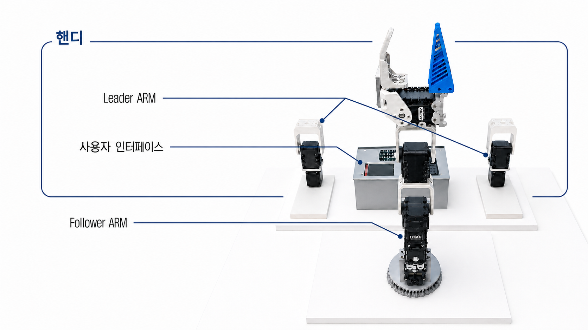
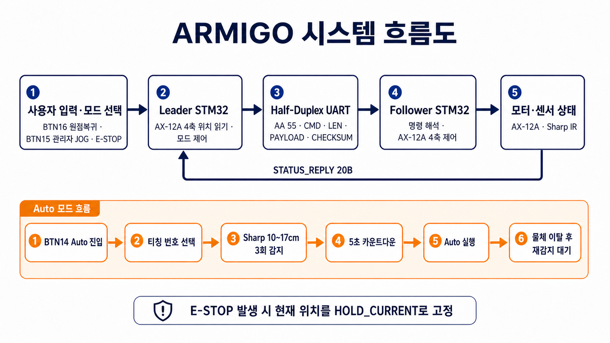
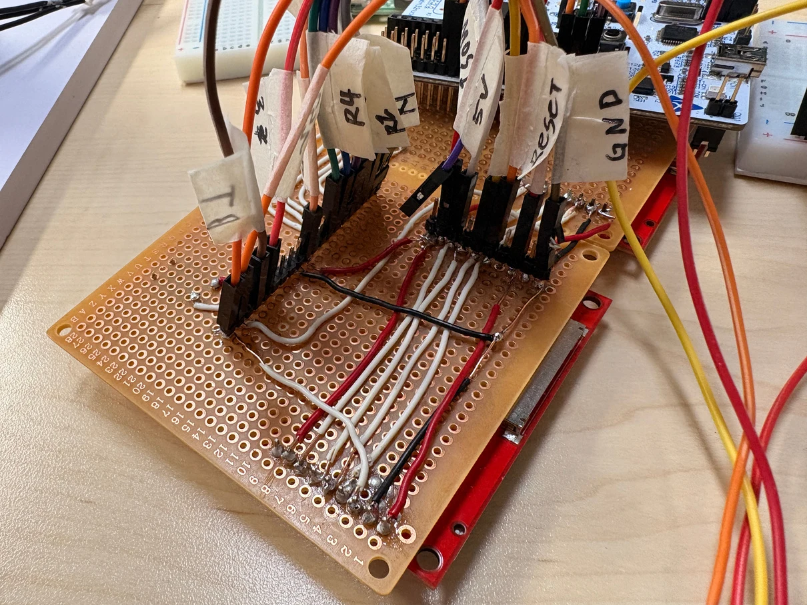
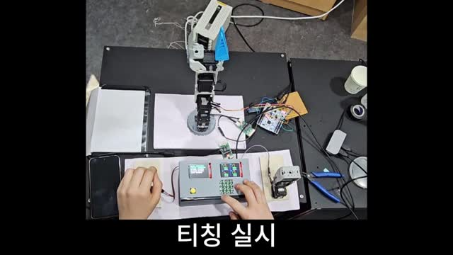
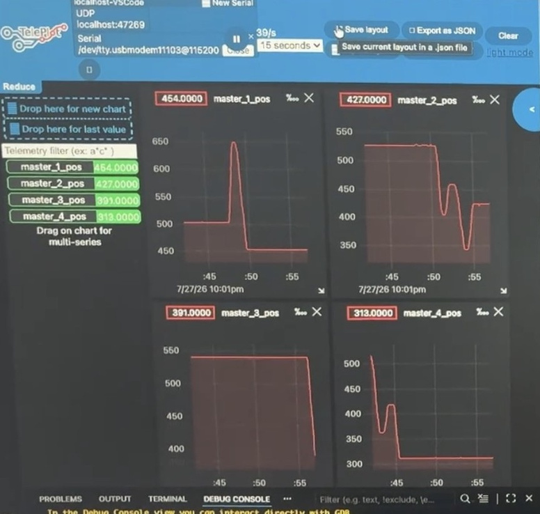
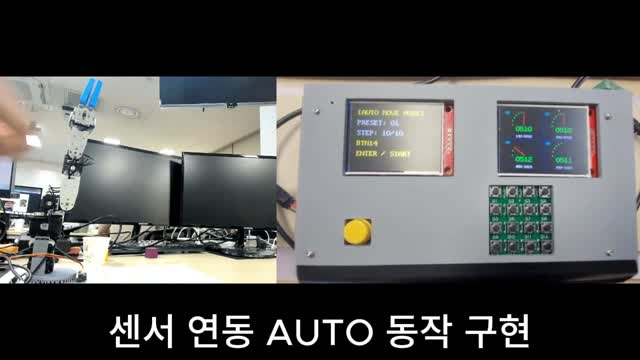

손으로 가르치고, 로봇팔로 재현
Leader Arm의 4축 자세를 Follower Arm에 전달하고 저장한 자세를 반복 실행하는 티칭 시스템입니다.


전체 시스템
Leader의 관절 위치를 STM32가 읽고 HC-05 무선 통신으로 전달합니다. Follower STM32는 수신한 4축 위치를 AX-12A의 목표 위치에 반영합니다.
조작과 반복 실행
키패드로 원점 복귀, 티칭, 프리셋 선택과 자동 동작을 제어합니다. LCD는 관절 위치와 모터 상태를 표시하고, Follower의 IR 센서는 물체 유무를 확인합니다.
역할 분담
하드웨어·모터 제어를 공동 담당했습니다. 인터페이스 구성과 판단 로직은 다른 팀원 담당이며, 보드 간 통신과 티칭 동작은 팀 통합 결과입니다.
다중 모터 배선과 위치 제어 구현
모터 통신부터 만능기판·외장 구성까지, 반복 동작이 가능한 실물 로봇팔을 구성했습니다.


Half-Duplex · Daisy Chain
Protocol 1.0과 모터 ID로 각 관절을 제어합니다. 통신선 수를 줄이는 Half-Duplex와 Daisy Chain을 적용해 움직이는 관절 주변의 배선을 정리했습니다.
기판과 기구 구성
부품별 구역을 정해 만능기판에 고정하고 배선·라벨링을 진행했습니다. 외장과 그리퍼를 제작해 내부 배선을 보호하고 물체를 잡는 구조를 구성했습니다.
티칭과 태스크 분리
4축 위치를 Flash에 저장하고 재생하는 흐름을 통합했습니다. FreeRTOS로 모터 위치 확인, 통신, 입력, LCD 작업을 분리하고 공유 자원에는 Mutex를 적용했습니다.
모터 수가 늘며 생긴 통신 문제 해결
회로와 수신 방식, UART 설정을 나누어 확인해 다중 모터 제어를 안정화했습니다.


01 · 세 번째 모터 연결 시 통신 실패
2개는 동작했지만 3개 연결 시 실패했습니다. 내부 Pull-up의 송·수신 전환 영향을 확인하고 외부 4.7 kΩ Pull-up으로 수정해 다중 모터 통신을 안정화했습니다.
02 · Polling 수신의 지연
반복적인 통신 대기로 제어 주기가 불규칙해지고 동작이 끊겼습니다. Interrupt 기반 수신으로 변경해 통신 대기가 제어에 미치는 영향을 줄였습니다.
03 · 블루투스 연결·AT 응답 불안정
STM32 클럭 설정 때문에 실제 UART 속도가 맞지 않았습니다. RCC와 UART 설정을 수정하고 Master·Slave 역할을 재설정한 후 정상 통신을 확인했습니다.